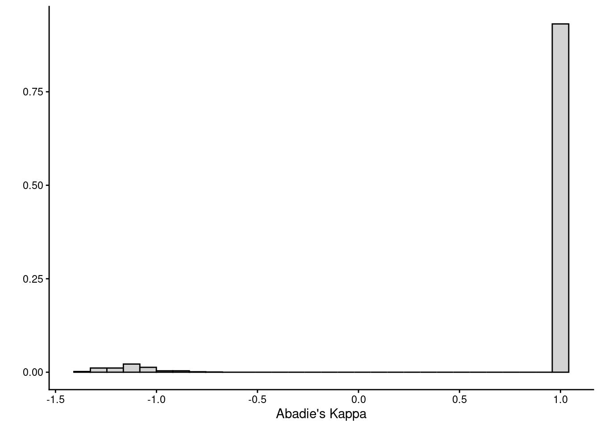
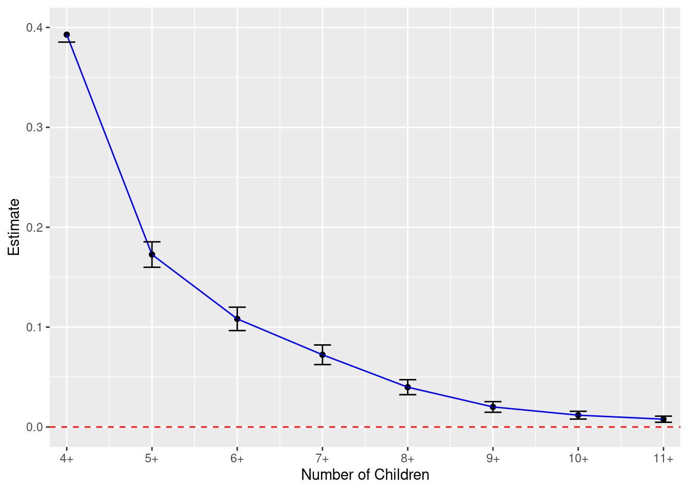
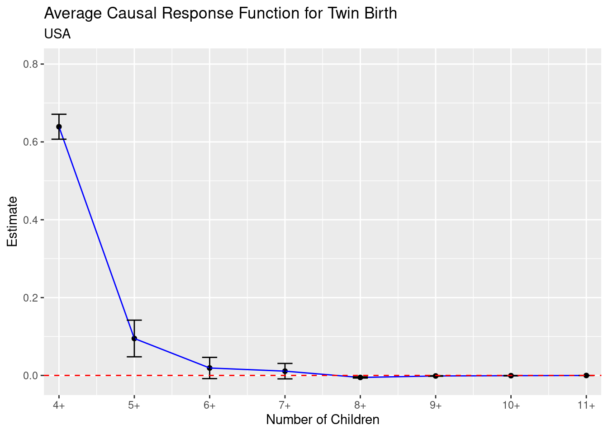

library(dplyr)
data <- read.csv(file = "data/Finkelstein_et_al_2012.csv")
# Rename variables
data <- data |> rename(Y = er_any_12m,
D = ohp_all_ever_survey,
Z = treatment) |>
filter(!is.na(Y))Chapter 5
Code Call-out 5.1: Treatment Assignment with Imperfect Compliance
In this code call-out we use data of Finkelstein et al. (2012), which analyses the impact of public insurance coverage on a range of health outcomes and measures of well-being. Finkelstein et al. (2012) analyze the Oregon Health Insurance Experiment, which randomly selected by lottery a group of households who could then submit the paperwork to be able to enroll in Medicaid, a public health insurance program which covers individuals’ medical expenses. Medicaid is offered to low income households, and in general individuals covered by Medicaid are different in a range of ways to individuals not covered by Medicaid. But because the Oregon Health Insurance Experiment randomly assigned individuals to a treatment group, which was invited to apply for Medicaid, and a control group, which was not invited to apply for Medicaid, this random assignment can be used as an instrument for Medicaid coverage.
In this code call out we use data from Finkelstein et al. (2012) to estimate the local average treatment effect of Medicaid on health outcomes. In particular, we focus on understanding the range of ways which we can mechanically arrive to this estimand, showing the equivalance between, 2SLS, the Wald estimator, and indirect least squares as laid out in Section 5.2.4 of the book. This should also make clear to us the relationship between the intention to treat effect, the 2SLS first stage and the LATE.
In the file Finkelstein_et_al_2012.csv you can find a minimalist sample of the data used by Finkelstein et al. (2012) in order to replicate some of the paper’s tables 3 and 5 results. This minimalist sample consists of respondents to a survey that was sent out by mail in seven waves between July and August 2009.
In this example we will focus on a binary outcome er_any_12m which takes a value of 1 if individual has any ER visits in last six months and 0 otherwise. The endogenous treatment indicator variable \(D\) is a binary variable ohp_all_ever_survey which takes 1 if the individual was ever on Medicaid during the study period and our instrument \(Z\) is a binary variable treatment which takes 1 if the individual’s household was selected by the lottery. Below, we load these data, rename the outcome, endogenous variable and instrument as Y, D and Z respectively, and make one minor edit to convert our outcome variable to a numeric format. Note that here we are dropping a small number of individuals for whom we do not have information on the outcome of interest:
We will begin by estimating Intention to Treat Effect (ITT) of lottery receipt, to see that we can replicate the parameters reported by Finkelstein et al. (2012). To estimate the ITT, we simply estimate: \[Y_i = \beta_0 + \beta_1 Z_i + X^\prime_i\Gamma + \varepsilon_i\] Where \(X_i\) is a vector of covariates which includes indicator variables for the number of individuals in the household listed on the lottery sign-up form, indicator variables for survey wave and the i/nteraction between these two sets of indicator variables. As laid out in Finkelstein et al. (2012), we will cluster standard errors at the household level
itt_model <- lm(data = data, weights = weight_12m,
formula = Y ~ Z + ddddraw_sur_2 + ddddraw_sur_3 +
ddddraw_sur_4 + ddddraw_sur_5 + ddddraw_sur_6 +
ddddraw_sur_7 + dddnumhh_li_2 + dddnumhh_li_3 +
ddddraXnum_2_2 + ddddraXnum_2_3 + ddddraXnum_3_2 +
ddddraXnum_3_3 + ddddraXnum_4_2 + ddddraXnum_5_2 +
ddddraXnum_6_2 + ddddraXnum_7_2) # 0.0064751
library(sandwich)
library(lmtest)
coeftest(x = itt_model, vcov. = vcovCL,
cluster = ~ household_id)['Z',] Estimate Std. Error t value Pr(>|t|)
0.006475139 0.006720284 0.963521587 0.335295752 As we see above, this ITT results in an estimate of 0.0065 with a corresponding standard error of 0.0067. This resplicates the result of Finkelstein et al. (2012) column 2 of table 5, suggesting that individuals who were randomly assigned to the option to apply to Medicaid – whether or not they ultimately gain access to Medicaid – had slightly higher rates of ER usage, however we cannot rule out that this effect is 0 with at standard levels of confidence.
Manually Estimating 2SLS: Right Estimates, Wrong Standard Errors
If we wish to estimate the LATE itself, there are a number of ways which we can proceed. In practice, we will essentially always want to make use of statistical routines for IV or 2SLS estimation, which will guarantee the correct implementation of standard errors. However, it is perhaps illustrative to see that we can “manually” estimate 2SLS, and—the point estimates at least—will agree entirely with those from 2SLS estimation routines. If we wish to estimate 2SLS, we can (logically) proceed in two stages. Below we begin by estimating the first stage, regressing endogenous treatment receipt on the randomly assigned lottery:
first <- lm(data = data, weights = weight_12m,
formula = D ~ Z + ddddraw_sur_2 + ddddraw_sur_3 +
ddddraw_sur_4 + ddddraw_sur_5 + ddddraw_sur_6 +
ddddraw_sur_7 + dddnumhh_li_2 + dddnumhh_li_3 +
ddddraXnum_2_2 + ddddraXnum_2_3 + ddddraXnum_3_2 +
ddddraXnum_3_3 + ddddraXnum_4_2 + ddddraXnum_5_2 +
ddddraXnum_6_2 + ddddraXnum_7_2)
coeftest(x = first, vcov. = vcovCL,
cluster = ~ household_id)['Z',] Estimate Std. Error t value Pr(>|t|)
0.289931394 0.006678454 43.412951785 0.000000000 Here we include the same set of controls and weights. We have also clustered standard errors by household, but for this manual implementation of 2SLS, this actually does not matter, as we will be simply working with predicted values \(\widehat{D}_i\) in the second stage, which do not depend on the first stage standard errors (indeed, for this reason, our standard errors in this manual implementation will be wrong!). As we see above, the first stage coefficient for lottery assignment is 0.290, which suggests that being selected by the lottery actually increases the likelihood of being covered by Medicaid by 29.0%. This replicates the results laid out Table 3, column 6. This value is not 1 because various households which were selected did not end up applying for Medicaid, and other households did apply, but ended up not meeting maximum income thresholds. With this first stage estimation in hand, now all we need to do to estimate our 2SLS (LATE) parameter is generate the predicted value \(\widehat{D}_i\), and regress \(Y_i\) on \(\widehat{D}_i\), conditional on the same controls and weights. We do this below:
seconddf <- data
seconddf$D_hat <- first$fitted.values
second <- lm(data = seconddf, weights = weight_12m,
formula = Y ~ D_hat + ddddraw_sur_2 + ddddraw_sur_3 +
ddddraw_sur_4 + ddddraw_sur_5 + ddddraw_sur_6 +
ddddraw_sur_7 + dddnumhh_li_2 + dddnumhh_li_3 +
ddddraXnum_2_2 + ddddraXnum_2_3 + ddddraXnum_3_2 +
ddddraXnum_3_3 + ddddraXnum_4_2 + ddddraXnum_5_2 +
ddddraXnum_6_2 + ddddraXnum_7_2)
coeftest(x = second, vcov. = vcovCL,
cluster = ~ household_id)['D_hat',] Estimate Std. Error t value Pr(>|t|)
0.02233335 0.02317888 0.96352159 0.33529575 This results in an estimated LATE of 0.022, and a standard error of 0.023 (see Finkelstein et al. (2012), Table 5, column 3). This suggests that Medicaid receipt results in a small increases in access to the ER, though again we cannot rule out that this estimate is 0 at standard levels of confidence. What we are interested in showing here, however, is that this “manual” 2SLS procedure is precisely what is estimated (thought with the correct standard errors now) if we use formal routines, such as R’s user-written function ivreg from AER package:
library(AER)
res_2sls <- ivreg(data = data,
formula = Y ~ D + ddddraw_sur_2 + ddddraw_sur_3 +
ddddraw_sur_4 + ddddraw_sur_5 + ddddraw_sur_6 +
ddddraw_sur_7 + dddnumhh_li_2 + dddnumhh_li_3 +
ddddraXnum_2_2 + ddddraXnum_2_3 + ddddraXnum_3_2 +
ddddraXnum_3_3 + ddddraXnum_4_2 + ddddraXnum_5_2 +
ddddraXnum_6_2 + ddddraXnum_7_2 |
Z + ddddraw_sur_2 + ddddraw_sur_3 +
ddddraw_sur_4 + ddddraw_sur_5 + ddddraw_sur_6 +
ddddraw_sur_7 + dddnumhh_li_2 + dddnumhh_li_3 +
ddddraXnum_2_2 + ddddraXnum_2_3 + ddddraXnum_3_2 +
ddddraXnum_3_3 + ddddraXnum_4_2 + ddddraXnum_5_2 +
ddddraXnum_6_2 + ddddraXnum_7_2,
weights = weight_12m)
coeftest(x = res_2sls, vcov. = vcovCL,
cluster = ~ household_id)['D',] Estimate Std. Error t value Pr(>|t|)
0.02233335 0.02312631 0.96571173 0.33419839 Above we see that with this procedure we perfectly recoved the same point estimate as above (0.022), but that standard errors is slightly higher. The fact that standard errors are higher makes sense, and indeed such a result will always occurr, given that we are now accounting for the fact that the first stage prediction is estimated, and not a known regressor.
2SLS as the Reduced Form Divided by the First Stage: Indirect Least Squares
To understand more deeply what 2SLS is doing, it is also useful to see that we can build this up in a number of alternative ways. One of these is to note that our LATE estimate is simply the ratio of the reduced form (ie the ITT) to the first stage. Because the reduced form captures the effect of random assignment on the outcome of interest, and because the first stage is not actually equal to one, to estimate the effect of Medicaid receipt itself we must “scale up” the reduced form to correct for the fact that only some proportion of individuals assigned to treatment actually received treatment. Below we see this, where we are simply re-estimating two of the quantities we already estimated above (the ITT and the first stage), before finally taking their ratio:
itt_model$coefficients['Z'] / first$coefficients['Z'] Z
0.02233335 As we can see, the value estimated by this “indirect least squares” root is precisely the same as that estimated by 2SLS previously.
2SLS, IV and the Wald Estimator: Equivalent in Setting with a Binary IV and no Covariates
Finally, note that in cases where we are working with a binary instruments (as in this case), and if there are no controls, we can arrive to our LATE in a number of other ways including by implementing the Wald Estimator: \[\widehat\tau^{Wald}_{LATE}=\frac{E[Y_i|Z_i=1]-E[Y_i|Z_i=0]}{E[D_i|Z_i=1]-E[D_i|Z_i=0]},\] or by estimating IV: \[\widehat\tau^{IV}_{LATE}=\frac{Cov(Y_i,Z_i)}{Cov(D_i,Z_i)}.\] While these are just equivalent ways of estimating the same thing, it is useful to see, and we will illustrate this below, first estimating 2SLS without any controls or weights:
res_2sls <- ivreg(data = data,
formula = Y ~ D | Z)
#print(paste0("The 2sls estimate is: ", res_2sls$coefficients["D"])and then comparing this to the Wald estimate:
YZ1 <- mean(data$Y[data$Z == 1])
YZ0 <- mean(data$Y[data$Z == 0])
DZ1 <- mean(data$D[data$Z == 1])
DZ0 <- mean(data$D[data$Z == 0])
print(paste0("The Wald estimate is: ", (YZ1-YZ0)/(DZ1-DZ0)))[1] "The Wald estimate is: -0.00676168609713425"and the IV estimate:
CovYZ = cov(data$Y, data$Z)
CovDZ = cov(data$D, data$Z)
print(paste0("The IV estimate is:", (CovYZ)/(CovDZ)))[1] "The IV estimate is:-0.00676168609713435"These are, as we see above, all exactly equivalent. One could also extend this to a setting with weights if appropriately weighting the statistics in the Wald estimate, though we will leave this as an exercise for you to explore.
Code Call-out 5.2: Characterising Compliers
To understand how Abadie’s Kappa is estimated and how this allows to understand the characteristics of compliers, we use data and setting from Clingingsmith, Khwaja, and Kremer (2009) who study the Hajj pilgrimage to Mecca. We open these data, called Clingingsmith_et_al_2009.csv, below:
rm(list = ls())
clingingsmith <- read.csv(
"data/Clingingsmith_et_al_2009.csv",
header = TRUE,
sep = ",",
stringsAsFactors = FALSE
)
head(clingingsmith) persid hhid s3q1a s3q1b s3q1c s3q1d s3q1e s3q1f s5_2q1a s5_2q2a s5_2q3a
1 747 1 4 4 4 4 4 4 0 15 0
2 827 1 0 1 1 2 2 3 2 3 3
3 597 1 4 4 4 4 4 4 0 0 0
4 26 1 4 4 3 4 4 4 3 2 5
5 331 1 2 2 3 4 3 4 0 0 0
6 195 1 4 4 4 4 4 4 0 0 0
s5_2q1b s5_2q2b s5_2q3b pod cat success hajj2006 clusterid district
1 0 20 0 2 1 0 0 1 GUJRAT
2 2 3 3 2 1 0 0 2 GUJRAT
3 0 0 0 2 1 1 1 3 RAWALPINDI
4 2 0 2 2 1 1 1 4 RAWALPINDI
5 0 0 0 2 1 0 0 5 ISLAMABAD
6 0 0 0 2 1 0 1 6 ISLAMABAD
subsample x_s1_3q3 x_s1_3q4 x_s1_3q5r4 x_s2q1 x_s2q2 x_s3q2a x_s3q2b x_s3q2c
1 1 1 1 0 4 1 1 4 3
2 1 1 1 1 2 0 3 3 2
3 1 0 NA 0 4 1 4 4 4
4 1 0 NA 0 4 1 3 3 3
5 1 1 1 0 4 1 3 4 4
6 0 1 1 1 2 1 3 3 3
x_s3q3 x_s3q4 x_s3q5 x_s3q6 x_s3q7 x_s5_5q1 x_s5_5q2 x_s5_5q3 x_s5_5q4
1 3 7 2 6 4 5 4 2 1
2 2 7 3 7 2 6 6 3 2
3 4 10 3 10 3 5 5 1 1
4 3 9 1 10 4 4 4 1 1
5 4 8 1 10 3 6 6 1 1
6 4 9 2 10 3 1 1 1 1
x_s5_4q1a x_s5_4q2a x_s5_4q3a x_s5_4q4a x_s5_4q5a x_s7q1 x_s7q2 x_s7q7 x_s7q9
1 1 0 0 0 0 0 0 1 0
2 0 0 0 1 1 1 1 1 1
3 0 0 0 0 0 0 0 1 0
4 0 1 0 0 1 1 1 1 1
5 0 0 0 0 0 1 0 1 0
6 0 0 0 0 0 1 0 0 1
x_s7q10 x_s7q11c x_s7q12a x_s7q12c x_s7q12d x_s7q12f x_s8q2 x_s8q3 x_s8q5
1 0 1 1 1 0 0 3 0 1
2 1 1 1 1 1 0 4 0 1
3 0 NA 1 1 1 0 2 0 1
4 1 1 1 1 0 0 3 1 0
5 0 1 1 1 0 1 4 0 0
6 1 0 1 1 1 1 4 1 0
x_s8q6 x_s8q7 x_s8q8 x_s10aq2 x_s10aq3 x_s10aq4 x_s10aq5 x_s10bq4 x_s10bq5
1 0 0 0 1 1 1 NA NA NA
2 0 0 0 0 1 0 NA 0 0
3 0 0 0 1 1 1 1 NA NA
4 1 1 1 0 0 1 1 1 1
5 0 0 1 0 1 1 1 0 0
6 1 0 1 0 1 1 1 0 0
x_s10cq3 x_s10cq4 x_s10cq5 x_2_s14cq8_9 x_s10dq1 x_s10dq6 x_s10dq7 x_2_s10dq8
1 NA NA NA 0 0 1 0 0
2 0 0 1 0 0 1 1 1
3 0 NA NA 1 0 0 0 0
4 0 0 1 0 0 1 1 1
5 0 NA 1 1 0 0 1 1
6 0 NA 1 0 0 0 NA 1
xd_s10dq8 x_s10dq12 x_s10dq14 x_s10dq15a x_s10dq15b x_s10dq15c x_s10dq15d
1 NA 0 1 0 1 0 1
2 0 1 0 0 1 0 1
3 NA 0 NA 0 0 0 1
4 0 1 0 0 1 0 0
5 1 0 NA 0 0 0 0
6 0 1 NA 0 0 0 1
x_s10dq18 xop_s10dq19b xop_s10dq19c xop_s10dq19d xda_s10dq19b xda_s10dq19c
1 1 0 0 0 NA NA
2 1 1 1 1 0 0
3 0 0 0 0 NA NA
4 0 1 1 1 1 0
5 0 0 0 1 NA NA
6 1 1 1 1 1 1
xda_s10dq19d x_s10eq2 x_s10eq3 x_s10eq4 x_s10eq5 x_s10eq6 x_s10hq3 x_s10hq6
1 NA 1 0 1 1 1 1 1
2 0 1 1 1 0 0 1 1
3 NA 1 1 0 0 0 NA NA
4 0 1 1 1 1 1 1 1
5 0 1 0 1 1 1 1 0
6 0 1 1 1 1 1 1 0
x_s10hq7 x_s10hq8 x_s10hq11 x_s12q1 x_s12q2 x_s14aq1 x_s14aq3 x_s14aq4
1 1 1 0 0 0 1 1 1
2 1 1 0 1 0 1 1 0
3 0 0 0 1 0 1 0 0
4 1 1 0 1 0 0 0 0
5 1 1 0 0 0 1 1 0
6 1 1 1 0 0 1 1 0
x_s14aq5 x_s14aq6 x_s14aq7 x_s14aq8 x_s14aq9 x_s14aq10 x_s14aq12 x_s14aq13
1 1 0 0 1 1 1 1 0
2 1 0 0 0 1 0 1 0
3 NA 0 0 0 1 1 1 0
4 0 0 1 1 1 1 1 0
5 1 1 0 1 1 0 1 0
6 NA 0 0 1 1 1 0 0
x_s14aq15d x_s14aq16a x_2_s14aq16a x_s14aq16b x_2_s14aq16b x_s14aq16d
1 1 1 0 1 0 1
2 1 1 1 1 1 1
3 NA 1 1 1 1 1
4 0 1 0 0 0 0
5 1 1 1 1 1 1
6 1 1 1 1 1 1
x_2_s14aq16d x_s14aq16e x_s14aq16f x_2_s14aq16f x_pillars x_s14bq2 x_s14bq3
1 1 0 1 1 1 1 1
2 1 1 1 1 1 1 1
3 1 1 1 1 1 0 0
4 0 0 0 0 1 1 1
5 1 1 1 1 1 1 0
6 1 0 1 1 1 1 1
x_s14bq4 x_s14bq5 x_s14bq6 x_s14bq7 x_s14cq1 x_s14cq2 x_s14cq3 x_s14cq4
1 1 1 1 1 1 1 1 0
2 1 1 1 1 0 1 0 0
3 0 1 1 0 0 0 0 0
4 1 1 1 1 1 1 1 1
5 0 1 0 1 0 0 1 0
6 1 1 1 1 1 1 1 1
x_s14cq6 x_2_s14cq6 x_s14dq1 x_s14dq2 x_s14dq3 x_s14dq4 x_s14dq5 x_s14dq6
1 1 0 1 1 0 0 0 1
2 1 0 1 0 0 0 0 0
3 0 1 0 0 0 0 0 0
4 1 0 1 1 1 0 1 0
5 1 0 0 0 0 0 0 1
6 0 1 0 1 1 0 1 0
x_2_s14dq6 x_s14dq7 x_s15b_a6 x_s15b_b6 x_s15b_c6 x_s15cq1 x_s15cq2 x_s15cq3
1 0 1 1 1 1 0 0 0
2 1 1 1 1 0 1 1 1
3 1 1 1 1 0 1 1 1
4 1 1 1 0 0 1 1 1
5 0 1 1 1 0 1 1 1
6 1 1 0 0 0 0 0 0
x_s15cq5 x_s15cq6 x_s15cq7 x_s15cq8 x_s15cq9 x_s15cq10 female age literate
1 0 0 0 0 0 0 0 70 1
2 1 0 0 0 0 0 0 55 1
3 0 0 0 0 0 0 0 45 1
4 2 2 1 1 1 -1 0 32 1
5 2 1 0 0 0 -2 0 77 0
6 1 1 0 0 1 -1 0 63 1
urban ptygrp smallpty newcluster
1 0 1 1 1
2 1 1 1 2
3 1 1 1 3
4 1 1 1 4
5 0 1 1 5
6 1 1 1 6In their paper, Clingingsmith, Khwaja, and Kremer (2009) instrument whether an individual made the Hajj pilgrimage in 2006 (hajj2006) with the outcome of a random lottery which determines the awarding of limited Hajj visas. The outcome of this random lottery process (success) strongly affects the likelihood an indivudal makes the pilgrimage, but is not deterministic, as unsuccessful applicants can seek places through private operators. Thus, it can be viewed as a case of random assignment with imperfect compliance. Clingingsmith, Khwaja, and Kremer (2009) use this visa to study how making this pilgrimage shapes beliefs and views of a sample of around 1600 lottery applicans from Pakistan. Here we consider the composition of compliers in terms of a range of covariates, in particular documenting complier means using Abadie’s Kappa. Below we keep our “treatment” of interest and the IV, as well as a number of covariates we will consider later in this call-out.
library(dplyr)
clingingsmith <- select(clingingsmith, success, hajj2006, female, age, urban, literate)For ease of notation below, we will redefine D = hajj2006 and Z = success as our indicater variables for treatment and instrument respectively.
clingingsmith <- rename(clingingsmith, D = hajj2006, Z = success)Before turning to consider the characteristics of compliers themselves, let’s briefly examine the first stage:
model <- lm(D ~ Z, data = clingingsmith)
summary(model)
Call:
lm(formula = D ~ Z, data = clingingsmith)
Residuals:
Min 1Q Median 3Q Max
-0.99181 -0.13733 0.00819 0.00819 0.86267
Coefficients:
Estimate Std. Error t value Pr(>|t|)
(Intercept) 0.137333 0.008926 15.38 <2e-16 ***
Z 0.854480 0.012230 69.87 <2e-16 ***
---
Signif. codes: 0 '***' 0.001 '**' 0.01 '*' 0.05 '.' 0.1 ' ' 1
Residual standard error: 0.2445 on 1603 degrees of freedom
Multiple R-squared: 0.7528, Adjusted R-squared: 0.7526
F-statistic: 4881 on 1 and 1603 DF, p-value: < 2.2e-16cat("Rate of Hajj among individuals who are successful in the visa:\n")Rate of Hajj among individuals who are successful in the visa:cat(coef(model)["(Intercept)"] + coef(model)["Z"], "\n")0.9918129 With this simple bivariate regression we can see the three relevant proportions as the rate of individuals who make the pilgrimage when not successful in the lottery (the constant of 0.14), the increase in the likelihood that an individual makes the pilgrimage when being successful in the lotter (the first stage effect of 0.85), and hence the likelihood of making the pilgrimage when being successful in the lottery as the sum of these two terms (0.99). The fact that the first stage is very strong will have an impact on how compliers compare to the entire sample, given that most individuals here are indeed compliers.
Covariate Means
Our main goal in this code call-out is to explore Abadie’s kappa, and how this allows us to “describe” compliers. We will thus be interested in calculating a series of means of covariates among compliers. In particular, we will consider the covariates documeted in Table 2 of Clingingsmith, Khwaja, and Kremer (2009), and for this will create the rural and illiterate variables as the complements of urban and literate respectively.
clingingsmith <- clingingsmith %>%
mutate(
illiterate = 1 - literate,
rural = 1 - urban
)Now we summarise these variables to ensure that they do indeed coincide with those documented in the paper’s Table 2:
vars <- c("age","female","illiterate","urban","rural")
full_means <- clingingsmith %>% summarise(across(all_of(vars), ~mean(.x, na.rm = TRUE)))
stat_df <- as.matrix(data.frame(
`Full Sample` = as.numeric(full_means),
Compliers = NA_real_,
row.names = names(full_means)
))
stat_df Full.Sample Compliers
age 54.5750779 NA
female 0.4903427 NA
illiterate 0.4018692 NA
urban 0.6741433 NA
rural 0.3258567 NAAbove we have saved the mean of each variable in a matrix called stat_df, and below we will populate the remaining cells to examine how our complier means correspond to the means in the full sample which we hav egenerated above.
Computing Abadie’s Kappa
In order to calculate mean characteristics of compliers, we start by calculating Abadie’s Kappa using the textbook formula (5.27): \[ \kappa_i = 1 - \frac{D_i (1 - Z_i)}{\Pr(Z_i = 0|X_i)} - \frac{(1 - D_i) Z_i}{\Pr(Z_i = 1|X_i)} \] We observe each individual’s treatment status \(D_i\) and instrument \(Z_i\), but we do not observe the conditional probabilities \(\Pr(Z_i = 1|X_i)\) and \(\Pr(Z_i = 0|X_i)\). To estimate them, we fit a probit model of the instrument on covariates:
model <- glm(Z ~ female + age + urban + literate,
family = binomial(link = "probit"),
data = clingingsmith)
clingingsmith$PrZ1 <- predict(model, type = "response")
clingingsmith$PrZ0 <- 1 - clingingsmith$PrZ1We then compute Abadie’s kappa using the estimated probabilities:
clingingsmith <- clingingsmith %>%
mutate(Kappa = 1 - (D * (1 - Z)) / PrZ0 - ((1 - D) * Z) / PrZ1)Let’s now have a look at what this Kappa looks like in our data, with a simple histogram plot:
library(ggplot2)
ggplot(clingingsmith, aes(x = Kappa)) +
geom_histogram(
aes(y = after_stat(count / sum(count))),
bins = 30,
color = "black",
fill = "lightgrey"
) +
labs(
title = "Abadie's Kappa Distribution",
x = "Abadie's Kappa",
y = ""
) +
scale_y_continuous(labels = scales::number_format(accuracy = 0.01)) +
theme_classic()
There are perhaps two key features we notice in this histogram. Firstly, we can see a large mass of units (93.15%) whose value for Abadie’s Kappa is concentrated around the value of 1. This is due to the high compliance level of this study as you can note from formula (5.27) that all compliers will have a value of 1 for their Abadie’s Kappa (as will any individuals who comply with their treatment assignment). Secondly, we note a series of negative values. This is also expected given the nature of the second and third terms in the formula for Abadie’s Kappa. You can see that both of these terms must either have 0 or 1 in the numerator. If \(Z_i=0\) and \(D_i=1\) (always-takers with values of zero for the instrument) the numerator of the first term will be one and of the second term will be 0, whereas if \(D_i=0\) and \(Z_i=1\) (never-takers assigned 1 for the instrument), the numerator of the second term will be 0 and that of the third term will be 1. Finally, note that as the denominator of each of these terms is strictly between 0 and 1, these terms must be bounded between 1 and \(\infty\), meaning that for non-compliers, Abadie’s Kappa will always be negative. In cases where \(\Pr(Z_i=0|X_i)\) and \(\Pr(Z_i=1|X_i)\) are approximately 0.5 (as we see below), we would expect that these second and third terms should be around -2, resulting in values of Abadie’s Kappa around -1.
summary(clingingsmith[, c("PrZ0", "PrZ1")]) PrZ0 PrZ1
Min. :0.3938 Min. :0.4547
1st Qu.:0.4491 1st Qu.:0.5177
Median :0.4693 Median :0.5307
Mean :0.4673 Mean :0.5327
3rd Qu.:0.4823 3rd Qu.:0.5509
Max. :0.5453 Max. :0.6062 Covariate Means among compliers
Now finally, with our calculated values for Abadie’s Kappa we can estimate the complier means of covariates following the textbook formula (5.28) \[E[x_1|D_1 > D_0] = \frac{1}{\Pr(D_1 > D_0)}E[\kappa x_1]\] Where \(\Pr(D_1 > D_0)\) is the rate of compliance in this sample, which incidentally can be calculated as the expected value of Abadie’s Kappa. We estimate these complier-means below:
library(dplyr)
library(tibble)
library(tidyr)
PrD1 <- mean(clingingsmith$Kappa, na.rm = TRUE)
stat_df <- stat_df %>%
as.data.frame() %>%
rownames_to_column(var = "covariate") %>%
left_join(
clingingsmith %>%
mutate(across(c(age, female, illiterate, urban, rural), ~ . * Kappa)) %>%
summarise(across(c(age, female, illiterate, urban, rural),
~ mean(.x, na.rm = TRUE) / PrD1)) %>%
pivot_longer(everything(), names_to = "covariate", values_to = "Compliers"),
by = "covariate"
) %>%
column_to_rownames(var = "covariate")
stat_df Full.Sample Compliers.x Compliers.y
age 54.5750779 NA 54.8876540
female 0.4903427 NA 0.4954139
illiterate 0.4018692 NA 0.4156607
urban 0.6741433 NA 0.6616482
rural 0.3258567 NA 0.3383518As you can see the mean of covariates for full sample and compliers are very similar due to the high compliance level of this study, with some minor variations by specific variables.
Code Call-Out 5.3: Average Causal Response Functions
To understand how Average Causal Response (ACR) Functions are estimated we use data from Bhalotra and Clarke (2020) in order to estimate the impact of a twin at the third birth on the likelihood of exceeding different family sizes. This code call-out replicates the baseline scenario in plots (b) and (e) from Panels A and B respectively, in Figure 3 of Bhalotra and Clarke (2020) and Figure 5.2 of the book.
data <- read.csv(file = "data/Bhalotra_Clarke_2020.csv")To compute this functions we estimate the ACR of moving from \(j-1\) childs to \(j\) childs over the fertility (fert) of a family. For this we built dummies \(\mathbf{1}\{Fert_i \geq k\}\) equal to 1 if family \(i\) has at least \(k\) children.
for (k in 4:11) {
data[,paste0('fert', k)] <- as.numeric(data$fert >= k)
}We first focus on developing countries (DHS), this is Panel A from Figure 3 in Bhalotra and Clarke (2020).
library(dplyr)
dataDHS <- data |> filter(DataSource == "DHS")For estimate the ACR functions we run the next regressions: \[\mathbf{1}\{Fert_i == k\} = \beta_0 + \beta_1 \mathbf{1}\{TwinBirth == 3\} + \mathbf{x}^\prime\gamma + \varepsilon_i\] Where \(\mathbf{1}\{TwinBirth == 3\}\) is a dummy equal to 1 if the twin birth at family \(i\) occurred at \(3\)rd birth (twin_three_fam) and \(\mathbf{x}\) a vector of controls including a dummy for boy child (malec), dummies for country of origin (_cou), dummies for mother’s year of birth (year_birth), child’s age in years (age), dummies for a contraceptive use and intention (contracep_intent), dummies for the child’s birth order(bord, we drop the case bord == 1), dummies for the mother’s age at date of birth of the child (motherage) and the mother’s age at first birth (agefirstbirth). Also we run weighted least squares weighting by a family’s probability of being sampled (sweight) considering cluster standard errors by family (id) on families with at least three births (three_plus)
# Country code
dataDHS$num_cou <- as.factor(dataDHS$X_cou)
# Contraceptive intent code
dataDHS$num_contracep_intent <- as.factor(dataDHS$contracep_intent)
# Dummies for birth order
for (i in unique(dataDHS$bord)) {
dataDHS[,paste0("bord", i)] <- if_else(dataDHS$bord == i, 1, 0)
}
# Dummies for mother's age
for (i in sort(unique(dataDHS$motherage))) {
dataDHS[,paste0('mage',i)] <- if_else(dataDHS$motherage == i, 1, 0)
}
# Variables as factor
dataDHS <- dataDHS |>
mutate(year_birth = as.factor(year_birth),
age = as.factor(age))
# Keep families with 3+ childs
dataDHS <- dataDHS |> filter(three_plus == 1)Now we create a matrix to store the estimates along with it standard errors and 95% confidence interval
ACR <- data.frame(Child = 4:11, Point = NA, SE = NA, UB = NA, LB = NA)Next we estimate the regression for \(k \in \{4, 5, \ldots, 11\}\) and store the results
# Libraries to clutered standard errors
library(lmtest)
library(sandwich)
for (i in 4:11) {
# Define formula to estimate
fml <- as.formula(paste0("fert", i, " ~ twin_three_fam + ",
"malec + C(num_cou) + C(year_birth) + ",
"C(age) + C(num_contracep_intent) + bord2 + ",
paste0('mage', 1:44, collapse = " + "),
" + agefirstbirth"))
# Estimate
model <- lm(data = dataDHS, formula = fml, weights = sweight)
# Store result
ACR$Point[i-3] <- model$coefficients["twin_three_fam"]
# Get standard error
ACR$SE[i-3] <- coeftest(x = model,
vcov. = vcovHC(x = model, type = "HC1",
cluster = "id"))["twin_three_fam",
"Std. Error"]
ACR$UB[i-3] <- ACR$Point[i-3] + qnorm(p = 0.975) * ACR$SE[i-3]
ACR$LB[i-3] <- ACR$Point[i-3] + qnorm(p = 0.025) * ACR$SE[i-3]
}Finally we plot the results
library(ggplot2)
ggplot(data = ACR) + geom_point(aes(x = Child, y = Point)) +
geom_line(aes(x = Child, y = Point), color = 'blue') +
geom_errorbar(aes(ymin = LB, ymax = UB, x = Child), width = 0.2) +
geom_hline(yintercept = 0, color = 'red', linetype = 'dashed') +
scale_x_continuous(limits = c(3.8,11.2), breaks = seq(4, 11, 1),
labels = paste0(seq(4,11,1), "+"), expand = c(0,0)) +
scale_y_continuous(limits = c(0, 0.4)) +
labs(title = "Average Causal Response Function for Twin Birth",
subtitle = "Developing Countries", y = "Estimate", x = "Number of Children")
Finally we repeat this excercise for USA families and considering as controls the mother’s age at first birth (ageFirstBirth), dummies for the mother’s age at date of birth of the child (motherAge), dummies for the survey year (Syear), dummies for the age of interview (Bdate, we drop last two years), dummies for the region (region), dummies for the mother’s race (mrace) and the child’s sex (childSex)
# Select USA data
dataNHIS <- data |> filter(DataSource == "NHIS")
# Dummies for controls
## Mother Age
aux <- sort(unique(dataNHIS$motherAge))
for (i in 1:length(aux)) {
dataNHIS[,paste0("A_mage", i)] <- if_else(dataNHIS$motherAge == aux[i], 1, 0)
}
## Survey year
aux <- sort(unique(dataNHIS$surveyYear))
for (i in 1:length(aux)) {
dataNHIS[,paste0("B_syear", i)] <- if_else(dataNHIS$surveyYear == aux[i], 1,
0)
}
## Age interview
aux <- sort(unique(dataNHIS$ageInterview))
for (i in 1:length(aux)) {
dataNHIS[,paste0("B_Bdate", i)] <- if_else(dataNHIS$ageInterview == aux[i], 1,
0)
}
## Region
aux <- sort(unique(dataNHIS$region))
for (i in 1:length(aux)) {
dataNHIS[,paste0("B_region", i)] <- if_else(dataNHIS$region == aux[i], 1, 0)
}
## Mother Race
aux <- sort(unique(dataNHIS$motherRace))
for (i in 1:length(aux)) {
dataNHIS[,paste0("B_mrace", i)] <- if_else(dataNHIS$motherRace == aux[i], 1,
0)
}
## Child sex
dataNHIS <- dataNHIS |> mutate(childSex = if_else(childSex == "1 Male",
1, 2))
# Keep if has at least three childs
dataNHIS <- dataNHIS |> filter(three_plus == 1)
# Keep relevant variables
dataNHIS <- dataNHIS |> select(starts_with("fert"), twin_three_fam,
ageFirstBirth, starts_with("A_"),
starts_with("B_"), childSex, sWeight, mID)
# Data frame to store results
ACR <- data.frame(Child = 4:11, Point = NA, SE = NA, UB = NA, LB = NA)
# Estimate
for (i in 4:11) {
# Data with relevant fert variable
aux <- dataNHIS # Auxiliary data frame
dropnames <- paste0("fert", setdiff(4:11, i)) # Fert dummies to drop
aux <- aux[, !(colnames(aux) %in% dropnames)] # Drop dummies
aux <- aux[, -1] # Drop fert column
# Define formula to estimate
fml <- as.formula(paste0("fert", i, " ~ . - sWeight - mID"))
# Estimate
model <- lm(data = aux, formula = fml, weights = sWeight)
# Store result
ACR$Point[i-3] <- model$coefficients["twin_three_fam"]
# Get standard error
ACR$SE[i-3] <- coeftest(x = model,
vcov. = vcovHC(x = model, type = "HC1",
cluster = "mID"))["twin_three_fam",
"Std. Error"]
ACR$UB[i-3] <- ACR$Point[i-3] + qnorm(p = 0.975) * ACR$SE[i-3]
ACR$LB[i-3] <- ACR$Point[i-3] + qnorm(p = 0.025) * ACR$SE[i-3]
}
# Plot results
ggplot(data = ACR) + geom_point(aes(x = Child, y = Point)) +
geom_line(aes(x = Child, y = Point), color = 'blue') +
geom_errorbar(aes(ymin = LB, ymax = UB, x = Child), width = 0.2) +
geom_hline(yintercept = 0, color = 'red', linetype = 'dashed') +
scale_x_continuous(limits = c(3.8,11.2), breaks = seq(4, 11, 1),
labels = paste0(seq(4,11,1), "+"), expand = c(0,0)) +
scale_y_continuous(limits = c(-0.01, 0.8)) +
labs(title = "Average Causal Response Function for Twin Birth",
subtitle = "USA", y = "Estimate", x = "Number of Children")
Code Call-out 5.4: Fully Saturating a Model with Controls
In this code call out we will explore the concept of ‘fully saturating’ an IV model where covariates are required, as well as seeing that this fully saturated model captures underlying covariate-specific LATEs weighted by the relative explanatory power of the first state in each case. To see this, we will work with data from Duflo, Kiessel, and Lucas (2024). They study the impact of a number of school-level interventions in Ghana on child test scores. While the interventions themselves were randomly assigned, take-up was imperfect, and hence random assignment can be used to instrument take-up and estimate a LATE. We will focus on one specific outcome which is student scores on “foundational questions” in academic year 2, and we will examine the impact of receiving any intervention. This corresponds to column 3 of table 3 in Duflo, Kiessel, and Lucas (2024). To begin, we will open the original student-level data from the paper, and keep only students scores in year 2:
rm(list = ls())
library(haven)
df <- read_dta("data/Duflo_et_al_2024.dta")
df <- df[df$e2_testtaker == 1, ]We start by simply estimating an IV model with controls to replicate the results from column 3 of Table 3. Here, we regress test scores (e2_engmath_ASER_theta) on an indicator of how frequently schools were observed to be correctly implementing interventions (tarl) instrumented by random assignment to treatment (anytreat). We control for an indicator of whether the student is female, as well as full strata fixed effects.
library(estimatr)
model_iv <- iv_robust(
e2_engmath_ASER_theta ~ female + factor(strata) + tarl | female + factor(strata) + anytreat,
data = df,
clusters = schcode
)One thing to note is that the above specification is not actually ‘fully saturated’. For a model to be fully saturated we must both include all possible combinations of controls, and also include a separate interaction of each covariate level with the instrument. To see this in a simple set-up, we can first imagine that we had just a single covariate in our model. Later, we will see how things generalise for a setting with additional controls. We do this below with the binary indicator female. Here, because there are only two possible levels of controls, we need to generate an interaction with each level of the covariate to generate our fully saturated first stage. We do this below generating an interaction between the instrument for females (Z1) and males (Z2):
df$Z1 <- df$anytreat * df$female
df$Z2 <- df$anytreat * (1 - df$female)Now, let’s have a look at the “weight and saturate” idea in practice. To begin then, we will estimate the fully-saturated model. Note that here we must include the instrument for each level of female in the first stage which we generated above, and also control for all levels of the variables themselves. Given that female is a binary variable (and that we must omit a baseline reference group), this simply consists of including the covariate female below:
model_iv2 <- iv_robust(
e2_engmath_ASER_theta ~ female + tarl | female + Z1 + Z2,
data = df,
clusters = schcode
)
IV2SLS <- coef(model_iv2)["tarl"]The specification above is our fully saturated model, and we store the resulting esimate as a local IV2SLS to consult below. Now, lets confirm that this is equivalent to the weighted average of covariate-specific LATEs. To begin, we will calculate each LATE (one for female==1, and one for female==0), and store these as their own quantity:
# IV for female == 1
model_iv1 <- iv_robust(
e2_engmath_ASER_theta ~ tarl | anytreat,
data = subset(df, female == 1),
clusters = schcode
)
IV1 <- coef(model_iv1)["tarl"]
# IV for female == 0
model_iv2 <- iv_robust(
e2_engmath_ASER_theta ~ tarl | anytreat,
data = subset(df, female == 0),
clusters = schcode
)
IV2 <- coef(model_iv2)["tarl"]Then, we can calculate the weights themselves. Note that to do this we want to calculate the variance of the first stage prediction. So, below we calculate the first stage prediction as Dhat, and then calculate the variance for each first stage, which is also stored in a local:
model_ols <- lm(tarl ~ Z1 + Z2 + female,
data = df,
na.action = na.exclude)
# get a Dhat for each row of df
df$Dhat <- predict(model_ols)
V1 <- var(df$Dhat[df$female == 1], na.rm = TRUE)
V2 <- var(df$Dhat[df$female == 0], na.rm = TRUE)
# check
V1; V2[1] 0.0110261[1] 0.01054975Finally, we can follow equation 5.42 in the book, and generate the weights based on the variances above and the frequency of each covariate group in data:
P1 <- mean(df$female, na.rm = TRUE)
P2 <- 1 - P1
Vtot <- P1 * V1 + P2 * V2
omega1 <- P1 * V1 / Vtot
omega2 <- P2 * V2 / VtotNow, finally, let’s just confirm that our weighted group-specific LATE quantity does indeed return approximately the same value as the saturated first stage model:
P1 <- mean(df$female, na.rm = TRUE)
P2 <- 1 - P1
Vtot <- P1 * V1 + P2 * V2
omega1 <- P1 * V1 / Vtot
omega2 <- P2 * V2 / Vtot
IVweighted <- IV1 * omega1 + IV2 * omega2
cat(sprintf("Original 2SLS is %9.5f\n", IV2SLS))Original 2SLS is 0.23568cat(sprintf("Weighted IV is %9.5f\n", IVweighted))Weighted IV is 0.23568We see that here (as expected) our estimates do indeed coincide. Note that because these are asymptotically equivalent, in finite samples we may observe minor variations in the calculated estimates in each case, but as the sample grows, we will see that these quantities converge.
While this is all relatively clear with a single covariate (with a single level), things get a little bit more complex if there are multiple covariates and multiple levels. Because we need fully saturated covariates, we need a single covariate for each possible combination of \(X_i\) in data (ie we need the design matrix). In this particular case where we have 40 strata indicators (which are fortunately mutually exclusive), as well as a binary female indicator, we need up to 80 different instruments in the first stage, as well as a variable for each covariate. We will see that while this is a bit cumbersome in terms of output, we can also do this here.
We set this up below by looping through all possible combinations of covariate levels that can be observed in data. We do this by generating an indicator for each strata and female or male indicator (as a series of variables X1, X2, …), and then also a series of instruments for each of these as Z1, Z2, … Because there are a number of small strata in the data, we also confirm that the instrument does indeed vary for all covariate combinations, and if it does now, we simply remove these covariates and instruments from our data.
df <- df[, !(names(df) %in% c("Z1", "Z2", "Dhat"))]
stratvals <- unique(df$strata)
i <- 1
for (s in stratvals) {
for (w in c(0, 1)) {
Xi <- paste0("X", i)
Zi <- paste0("Z", i)
df[[Xi]] <- as.integer(df$strata == s & df$female == w)
df[[Zi]] <- df[[Xi]] * df$anytreat
subset_anytreat <- df$anytreat[df[[Xi]] == 1]
if (length(subset_anytreat) > 0 && sd(subset_anytreat, na.rm = TRUE) == 0) {
df[[Xi]] <- NULL
df[[Zi]] <- NULL
}
i <- i + 1
}
}
for (v in c("X33", "Z33", "X34", "Z34")) {
if (v %in% names(df)) df[[v]] <- NULL
}Now, having in essence “fully saturated” our data, we can run our IV model with the many controls and first stage instrument interactions. We do this below, saving our 2SLS estimate to compare to the weighted aggregate below.
X_vars <- grep("^X\\d+$", names(df), value = TRUE)
Z_vars <- grep("^Z\\d+$", names(df), value = TRUE)
controls <- paste(X_vars, collapse = " + ")
instruments <- paste(Z_vars, collapse = " + ")
fml <- as.formula(
paste0("e2_engmath_ASER_theta ~ tarl + ", controls,
" | ", controls, " + ", instruments)
)
# Run the 2SLS IV regression with clustering by schcode
library(estimatr)
model_iv_all <- iv_robust(
formula = fml,
data = df,
clusters = schcode
)
IV2SLS <- coef(model_iv_all)["tarl"]Now, as in the case with a single control, we can confirm that this is equivalent to the weighted aggregate of covariate-specific LATEs. First, let’s estimate the late for each covariate level in the data. We do this quietly below because this will result in a lot of LATEs!
X_vars <- grep("^X\\d+$", names(df), value = TRUE)
IV_list <- list()
for (var in X_vars) {
subset_df <- subset(df, df[[var]] == 1)
model_iv <- iv_robust(
e2_engmath_ASER_theta ~ tarl | anytreat,
data = subset_df,
clusters = schcode
)
IV_list[[var]] <- coef(model_iv)["tarl"]
}
for (var in names(IV_list)) {
assign(paste0("IV", var), IV_list[[var]])
}Now, let’s calculate the inputs for weights for each covariate-specific estimate. It is worth looking through this code carefully to ensure that these elements will allow us to calculate the weights required, as described in equation 5.42 in the book.
X_vars <- grep("^X\\d+$", names(df), value = TRUE)
Z_vars <- grep("^Z\\d+$", names(df), value = TRUE)
fs_vars <- c(Z_vars, X_vars)
fml_fs <- as.formula(paste("tarl ~", paste(fs_vars, collapse = " + ")))
model_fs <- lm(fml_fs, data = df, na.action = na.exclude)
df$Dhat <- predict(model_fs, newdata = df)
Vtot <- 0
for(var in X_vars) {
assign(paste0("V", var), var(df$Dhat[df[[var]] == 1], na.rm = TRUE))
assign(paste0("P", var), mean(df[[var]], na.rm = TRUE))
Vtot <- Vtot + get(paste0("P", var)) * get(paste0("V", var))
}Finally, we can use the inputs above to estimate the weights, as well as the “saturated and weighted” equivalte of the 2SLS estimate we generated previously. Note that because there are many LATEs, we are just doing this in a loop where we sum iteratively across each covariate level. In this way we sum across all LATEs to arrive to our final IV estimate, and also confirm that we are correctly generating weights by ensuring that weights sum to 1.
IVweight <- 0
omega <- 0
for (var in X_vars) {
omega_var <- get(paste0("P", var)) * get(paste0("V", var)) / Vtot
omega <- omega + omega_var
IVweight <- IVweight + get(paste0("IV", var)) * omega_var
}
cat(sprintf("Confirming weights: %9.5f\n", omega))Confirming weights: 1.00000cat(sprintf("Original 2SLS is %9.5f\n", IV2SLS))Original 2SLS is 0.21842cat(sprintf("Weighted IV is %9.5f\n", IVweight))Weighted IV is 0.21874Above we can see that while these is some minor variation between the original 2SLS estimate and the weighted and saturated IV, this is minor, owing to the fact that certain groups are quite small. Asymptotically, these quantities will converge to the same values.
References
Bhalotra, Sonia, and Damian Clarke. 2020. “The Twin Instrument: Fertility and Human Capital Investment.” Journal of the European Economic Association 18 (6): 3090–3139. https://doi.org/10.1093/jeea/jvz058.
Clingingsmith, David, Asim Ijaz Khwaja, and Michael Kremer. 2009. “Estimating the impact of the Hajj: Religion and tolerance in Islam’s global gathering.” The Quarterly Journal of Economics 124: 1133–70.
Duflo, Annie, Jessica Kiessel, and Adrienne M Lucas. 2024. “Experimental Evidence on Four Policies to Increase Learning at Scale.” The Economic Journal 134 (661): 1985–2008. https://doi.org/10.1093/ej/ueae003.
Finkelstein, Amy, Sarah Taubman, Bill Wright, Mira Bernstein, Jonathan Gruber, Joseph P. Newhouse, Heidi Allen, Katherine Baicker, and Oregon Health Study Group. 2012. “The Oregon Health Insurance Experiment: Evidence from the First Year.” The Quarterly Journal of Economics 127 (3): 1057–1106. https://doi.org/10.1093/qje/qjs020.